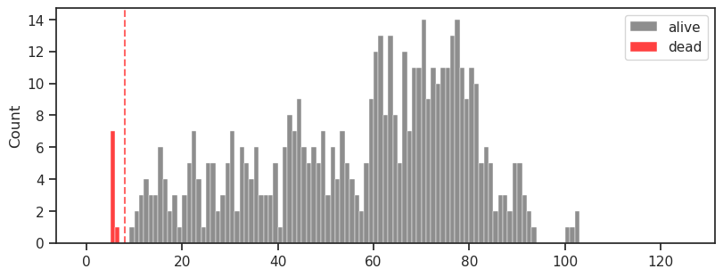
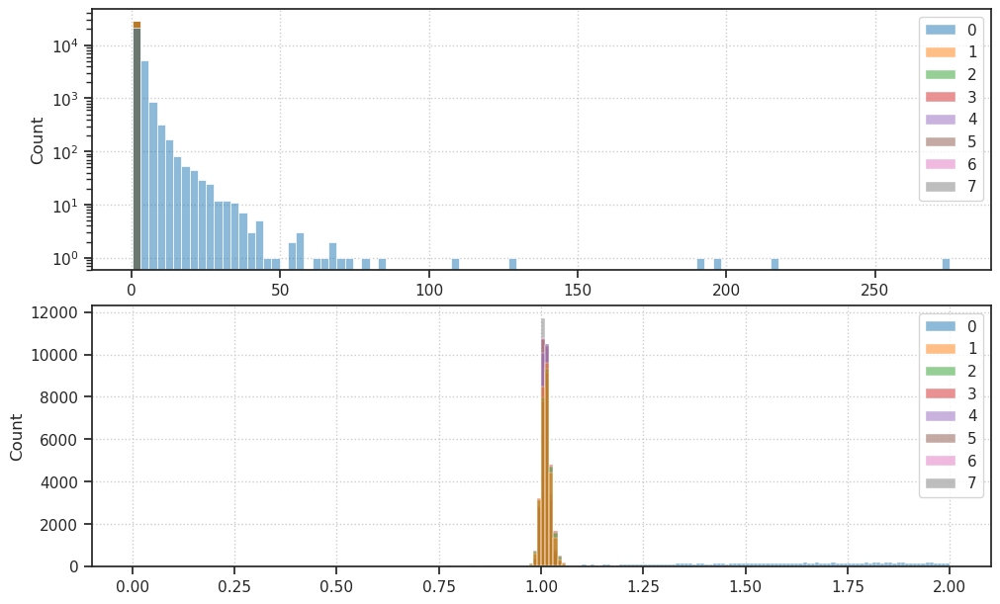
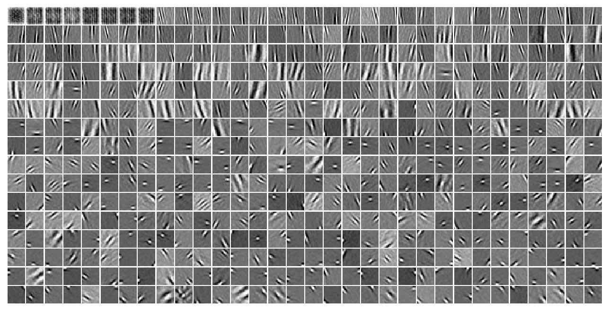

(13) Figs: NeuroAI Symp#
Motivation: Make figures for NeuroAI Symposium at WashU (May 15, 2024). Device = cuda:2
Show code cell source
# HIDE CODE
import os, sys
from IPython.display import display
# tmp & extras dir
git_dir = os.path.join(os.environ['HOME'], 'Dropbox/git')
extras_dir = os.path.join(git_dir, 'jb-vae/_extras')
fig_base_dir = os.path.join(git_dir, 'jb-vae/figs')
tmp_dir = os.path.join(git_dir, 'jb-vae/tmp')
# GitHub
sys.path.insert(0, os.path.join(git_dir, '_PoissonVAE'))
from analysis.eval import sparse_score
from figures.fighelper import *
from vae.train_vae import *
# warnings, tqdm, & style
warnings.filterwarnings('ignore', category=DeprecationWarning)
warnings.filterwarnings('ignore', category=FutureWarning)
from rich.jupyter import print
%matplotlib inline
set_style()
Show code cell source
# HIDE CODE
def detect_dead_neurons(tr: TrainerVAE):
dead_thres = {
'poisson': 0.008,
'gaussian': 0.08,
'laplace': 0.08,
}
data, loss, etc = tr.validate()
if tr.model.cfg.type == 'categorical':
thres = None
dead = np.zeros(np.prod(tr.model.size))
else:
thres = dead_thres.get(tr.model.cfg.type)
dead = loss['kl_diag'] < thres
return data, loss, etc, thres, dead.astype(bool)
Fig save dir#
from figures.imgs import plot_weights
fig_dir = pjoin(fig_base_dir, 'washu_may15')
os.makedirs(fig_dir, exist_ok=True)
print(os.listdir(fig_dir))
kws_fig = {
'transparent': True,
'bbox_inches': 'tight',
'dpi': 600,
}
['phi_lin_laplace.png', 'phi_lin_poisson.png', 'phi_lin_categorical.png', 'phi_lin_gaussian.png']
Device#
device_idx = 2
device = f'cuda:{device_idx}'
model_type = 'poisson'
Load model, plot dec weights#
root = add_home('Dropbox/chkpts/PoissonVAE')
models2load = {
'poisson': 'poisson-<lin|lin>-DOVES-mc_mach-5_(2024_05_14,04:46)',
'categorical': 'categorical-<lin|lin>-DOVES-mc_mach-5_(2024_05_14,04:04)',
'gaussian': 'gaussian-<lin|lin>-DOVES-mc_mach-5_(2024_05_14,04:09)',
'laplace': 'laplace-<lin|lin>-DOVES-mc_mach-5_(2024_05_14,04:12)',
}
models2load = {k: v.replace('/', ':') for k, v in models2load.items()}
trainers = {}
for name, load_path in models2load.items():
try:
trainers[name], _ = load_quick(
pjoin(root, load_path),
lite=True,
device=device,
verbose=True,
)
except FileNotFoundError:
continue
# params: 262.7 K
# params: 262.7 K
# params: 394.2 K
# params: 394.2 K
%%time
for name, tr in trainers.items():
data, loss, etc, thres, dead = detect_dead_neurons(tr)
save_obj(
obj={
'phi': tonp(tr.model.fc_dec.weight),
'dead': dead},
file_name=f"phi_{name}",
save_dir=tmp_dir,
verbose=True,
mode='npy',
)
print(f"{name}, # dead: {dead.sum()}")
if tr.model.cfg.type == 'categorical':
order = etc['logits'].mean(0).ravel()
order = np.argsort(order)[::-1]
else:
order = np.argsort(loss['kl_diag'])
fig, ax = tr.model.show(order=order, dpi=80) # , figsize=(16, 8))
# save
fname = '_'.join([
'phi',
tr.model.cfg.enc_type,
f"{tr.model.cfg.type}.png",
])
fname = pjoin(fig_dir, fname)
fig.savefig(fname=fname, **kws_fig)
[PROGRESS] 'phi_poisson.npy' saved at /home/hadi/Dropbox/git/jb-vae/tmp
poisson, # dead: 8

[PROGRESS] 'phi_categorical.npy' saved at /home/hadi/Dropbox/git/jb-vae/tmp
categorical, # dead: 0

[PROGRESS] 'phi_gaussian.npy' saved at /home/hadi/Dropbox/git/jb-vae/tmp
gaussian, # dead: 401
[PROGRESS] 'phi_laplace.npy' saved at /home/hadi/Dropbox/git/jb-vae/tmp
laplace, # dead: 416
CPU times: user 6.07 s, sys: 1.49 s, total: 7.56 s
Wall time: 7.55 s
Explore models, one by one#
Poisson#
tr = trainers['poisson']
data, loss, etc, dead_thres, dead = detect_dead_neurons(tr)
loss_avg = {k: v.mean() for k, v in loss.items()}
loss_avg['tot'] = loss_avg['mse'] + loss_avg['kl']
print(loss_avg)
{'mse': 137.71153, 'kl': 29.459375, 'kl_diag': 0.056859836, 'tot': 167.17091}
fig, ax = create_figure()
ax.plot(tr.stats['grad'].keys(), np.log(list(tr.stats['grad'].values())))
ax.axhline(np.log(tr.cfg.grad_clip), color='r')
plt.show()

fig, axes = create_figure(1, 2, (7, 2.0), cnst=True)
kws = dict(stat='percent', element='step')
sns.histplot(tonp(tr.model.log_rate.squeeze()), label=r'$\log r$', color='C5', ax=axes[0], **kws)
bins = np.linspace(0, loss['kl_diag'].max() * 1.1, 100)
sns.histplot(loss['kl_diag'], bins=bins, ax=axes[1], label='kl', color='C7', **kws)
add_legend(axes, loc='upper left')
axes[0].set(xlabel='log prior rates', yscale='log')
axes[1].set(xlabel='kl_diag', ylabel='', yscale='linear')
axes[1].ticklabel_format(
axis='x',
style='sci',
scilimits=(0, 0),
)
plt.show()

fig, ax = create_figure(1, 1, (8, 3))
bins = np.linspace(0, 125, 126)
sns.histplot(loss['kl_diag'][~dead] * 1000, bins=bins, color='dimgrey', label='alive', ax=ax)
sns.histplot(loss['kl_diag'][dead] * 1000, bins=bins, color='r', label='dead', ax=ax)
ax.axvline(dead_thres * 1000, color='r', ls='--', alpha=0.6)
ax.locator_params(axis='x', nbins=11)
ax.legend()
plt.show()

order = np.argsort(loss['kl_diag'])
w_dec = tonp(tr.model.fc_dec.weight)
norms = sp_lin.norm(w_dec, axis=0)
w_dec = w_dec.T.reshape(-1, 16, 16)
w_dec = w_dec[order]
norms = norms[order]
dead = dead[order]
norm99 = np.quantile(norms, 0.99)
norms_scaled = np.clip(norms / norm99, 0, 1)
tr.model.log_rate.squeeze()[order][dead]
tensor([-5.9669, 3.4290, 3.3480, 3.3325, 3.6297, 3.6894, 3.7004, 3.8062],
device='cuda:0', grad_fn=<IndexBackward0>)
r_dr = etc['r*dr'][:, order]
fig, ax = create_figure(1, 1, (10, 3))
sns.histplot(r_dr[:, dead], kde=True)
plt.grid()
plt.show()
log_dr = etc['log_dr'][:, order]
fig, axes = create_figure(2, 1, (10, 6))
sns.histplot(np.exp(log_dr[:, dead]), bins=100, ax=axes[0])
axes[0].set_yscale('log')
sns.histplot(np.exp(log_dr[:, dead]), bins=np.linspace(0, 2, 201), ax=axes[1])
add_grid(axes)
plt.show()

dr = np.exp(log_dr)
dr_mu, dr_var = dr.mean(0), dr.var(0)
dr_var
array([1.65408802e+01, 1.40317177e-04, 1.59256815e-04, 1.67835489e-04,
9.86891901e-05, 9.03981636e-05, 8.98593062e-05, 7.53528147e-05,
2.49320126e+00, 6.01152277e+00, 2.68616605e+00, 4.23895359e+00,
1.15237391e+00, 7.72028267e-01, 1.42898083e+00, 1.84344769e+00,
4.18161392e+00, 5.83515882e-01, 7.25232959e-01, 2.91342306e+00,
8.08773804e+00, 3.37512183e+00, 9.32457566e-01, 8.30155611e-01,
1.44868338e+00, 6.56245172e-01, 9.07312930e-01, 6.50314140e+00,
1.62937045e+00, 1.15556078e+01, 5.58778095e+00, 6.84335589e-01,
3.18722134e+01, 6.61380708e-01, 4.24239588e+00, 7.47032940e-01,
4.17406946e-01, 1.18516874e+00, 6.86362147e-01, 3.49910408e-01,
5.65167546e-01, 8.38197231e-01, 4.48980808e-01, 6.20941043e-01,
1.36558933e+01, 5.10924006e+00, 3.00326252e+00, 8.10509324e-01,
1.40191615e+00, 1.47645366e+00, 8.98970068e-01, 1.09782124e+00,
5.16780794e-01, 7.64121830e-01, 6.23778343e+00, 2.26723820e-01,
2.57047892e+00, 7.53986716e-01, 2.64103591e-01, 9.35860348e+00,
2.78644681e-01, 2.59054470e+00, 7.29175091e-01, 2.51972824e-01,
3.34107667e-01, 3.51460636e-01, 9.61025596e-01, 3.13710098e+01,
4.02285457e-01, 3.18834424e-01, 2.67224759e-01, 2.98929393e-01,
1.94935811e+00, 6.03501797e-01, 4.37592536e-01, 3.30240786e-01,
7.45915532e-01, 3.19689393e-01, 1.61620235e+00, 1.87386882e+00,
3.50534648e-01, 4.20567185e-01, 4.48137015e-01, 4.25221205e-01,
2.10822240e-01, 3.63669783e-01, 2.78544712e+00, 2.72761971e-01,
1.71252704e+00, 2.14938238e-01, 2.50630736e-01, 1.03025758e+00,
7.43386793e+00, 5.60612082e-01, 4.11441416e-01, 3.20917636e-01,
8.68968844e-01, 6.91511154e-01, 2.31453508e-01, 1.35657585e+00,
9.32996655e+00, 2.44867682e-01, 2.13784170e+00, 2.48391837e-01,
2.54656702e-01, 4.71315891e-01, 2.57545143e-01, 2.09682986e-01,
3.77765149e-01, 1.07465136e+00, 2.07451478e-01, 3.82457852e-01,
7.25553572e-01, 7.73790777e-01, 4.28992599e-01, 3.06497574e-01,
3.35366756e-01, 2.55735815e-01, 3.16866428e-01, 5.96096134e+00,
1.02247584e+00, 1.52339983e+00, 1.28041947e+00, 5.43159008e-01,
6.03605330e-01, 4.22645926e-01, 2.41597509e+00, 1.27513468e+00,
3.14623147e-01, 5.04099488e-01, 3.19023460e-01, 3.15048051e+00,
3.94345582e-01, 6.22429073e-01, 2.20378757e+00, 3.20520312e-01,
8.74619067e-01, 6.04912519e-01, 3.40977252e-01, 3.96474302e-01,
6.98504269e-01, 3.04664940e-01, 1.25599110e+00, 2.99242914e-01,
6.74019694e-01, 1.50639975e+00, 8.03118289e-01, 1.32078373e+00,
2.70558476e-01, 3.30164969e-01, 1.26465678e+00, 4.29449946e-01,
3.02673548e-01, 4.47154343e-01, 2.17523170e+00, 4.41348195e-01,
3.85257930e-01, 7.32144654e-01, 5.72148800e-01, 2.19821835e+00,
5.28187811e-01, 3.49001408e-01, 1.25448853e-01, 4.52243179e-01,
5.44888616e-01, 8.49695802e-01, 6.05602384e-01, 4.20476735e-01,
3.16498667e-01, 4.03043413e+00, 6.01546288e-01, 7.60988665e+00,
1.31692648e+00, 9.54002619e-01, 9.12694812e-01, 1.16693199e+00,
3.39603758e+00, 2.41348118e-01, 6.82769001e-01, 5.86862326e-01,
2.71833301e-01, 6.53117716e-01, 2.19160151e+00, 7.40429521e-01,
2.98187226e-01, 8.81612122e-01, 1.55210054e+00, 3.93552691e-01,
2.62995034e-01, 3.05806041e-01, 4.48933840e-01, 7.22630560e-01,
1.51228583e+00, 3.32822442e+00, 1.21434033e+00, 4.03126097e+00,
2.50662088e-01, 4.31013644e-01, 8.76186788e-01, 6.42800331e-01,
4.07708168e+00, 1.62293601e+00, 4.32678014e-01, 4.25429165e-01,
3.43919539e+00, 6.55432880e-01, 1.54044533e+00, 3.22667766e+00,
5.55337667e-01, 5.03606796e-01, 1.20715618e-01, 5.12839913e-01,
4.34591174e-01, 3.51636052e-01, 4.15040612e-01, 2.04194903e+00,
6.43779218e-01, 8.05950284e-01, 5.23294747e-01, 1.38758934e+00,
1.06415212e+00, 7.62335658e-01, 4.99282867e-01, 3.29774976e-01,
3.79195720e-01, 4.74878979e+00, 6.68291390e-01, 2.17265058e+00,
7.02411413e-01, 1.13576226e-01, 1.42449212e+00, 6.41962230e-01,
1.96127129e+00, 2.41037869e+00, 5.42811155e-01, 1.78183448e+00,
4.50475723e-01, 9.82996404e-01, 3.11977595e-01, 5.60748637e-01,
1.20044971e+00, 4.70701247e-01, 2.26156020e+00, 1.17917395e+00,
2.54164171e+00, 5.74685931e-01, 1.80412245e+00, 1.11116362e+00,
1.60409880e+00, 1.29771125e+00, 1.04637325e+00, 1.52764463e+00,
5.82853913e-01, 1.97923803e+00, 6.40391469e-01, 2.05044913e+00,
3.70380431e-01, 6.55193746e-01, 9.10136223e-01, 9.18626308e-01,
8.27863097e-01, 1.42047441e+00, 8.44288468e-01, 9.35627103e-01,
9.88236010e-01, 4.39781040e-01, 1.98633420e+00, 1.60178065e+00,
6.37851477e-01, 4.61231232e-01, 2.57536483e+00, 1.08283162e+00,
6.87177479e-01, 9.84255135e-01, 6.37188137e-01, 5.61740100e-01,
9.36252952e-01, 3.44386518e-01, 1.62687206e+00, 1.50614846e+00,
7.77146637e-01, 1.53196847e+00, 6.19526923e-01, 4.82287616e-01,
5.76759040e-01, 2.27089095e+00, 7.03067422e-01, 4.99690235e-01,
9.22202229e-01, 1.05782533e+00, 6.15988314e-01, 1.08931196e+00,
1.53723466e+00, 1.58520734e+00, 7.84043789e-01, 1.46009672e+00,
1.78737068e+00, 5.94131947e-01, 1.03373396e+00, 1.24745274e+00,
6.11360908e-01, 1.07263410e+00, 4.13768768e-01, 3.75751764e-01,
1.11311603e+00, 9.49056268e-01, 1.14415503e+00, 7.22531557e-01,
7.91889489e-01, 6.70729697e-01, 1.29381382e+00, 1.55563846e-01,
1.22507858e+00, 1.88732851e+00, 7.21602738e-01, 1.08672881e+00,
1.89779389e+00, 1.46208870e+00, 7.49023139e-01, 6.30561113e-01,
4.86151278e-01, 7.37956166e-01, 9.11473274e-01, 5.17878294e-01,
6.09721839e-01, 1.23516333e+00, 1.27542567e+00, 1.08167672e+00,
6.75302029e-01, 1.05548537e+00, 5.04396737e-01, 6.65319324e-01,
8.65894556e-01, 1.10111189e+00, 7.75331676e-01, 5.03266394e-01,
4.46114600e-01, 1.21991110e+00, 2.96085000e+00, 9.06054735e-01,
4.26099151e-01, 1.28675923e-01, 5.47520220e-01, 7.06049263e-01,
1.26849723e+00, 5.96810341e-01, 5.37867904e-01, 9.03028846e-01,
5.87927759e-01, 4.85369802e-01, 7.57132530e-01, 6.08394563e-01,
1.08013713e+00, 6.37277603e-01, 7.35677719e-01, 5.95007837e-01,
6.44043684e-01, 5.10440767e-01, 1.02138364e+00, 7.11934566e-01,
4.34367716e-01, 7.56139874e-01, 9.24916029e-01, 4.97530162e-01,
8.02709579e-01, 6.92371368e-01, 8.97288561e-01, 1.17371392e+00,
5.04323781e-01, 5.81345141e-01, 7.34646797e-01, 5.74637711e-01,
6.55338705e-01, 8.87317121e-01, 7.23963678e-01, 8.40169132e-01,
7.44244099e-01, 9.33094680e-01, 5.64010799e-01, 9.86693740e-01,
1.30374360e+00, 1.40561485e+00, 8.46045136e-01, 8.09591115e-01,
9.11255836e-01, 1.25937843e+00, 7.22211838e-01, 7.06665039e-01,
9.10886824e-01, 4.36375201e-01, 9.11962807e-01, 8.57746959e-01,
7.52715528e-01, 5.99900007e-01, 6.54787600e-01, 7.97908902e-01,
4.05721784e-01, 9.94292021e-01, 5.54004133e-01, 1.08593690e+00,
1.28025162e+00, 1.23566437e+00, 6.42460525e-01, 8.86046410e-01,
6.96506381e-01, 8.67929101e-01, 4.63028580e-01, 9.29006517e-01,
9.57186520e-01, 8.14326823e-01, 8.78179014e-01, 1.12831843e+00,
8.21006417e-01, 8.03559303e-01, 8.22019279e-01, 1.13918877e+00,
6.12119377e-01, 2.50627589e+00, 1.00039446e+00, 5.34246922e-01,
5.84256291e-01, 5.80620110e-01, 5.95039070e-01, 4.56556022e-01,
7.93275595e-01, 6.57043457e-01, 9.01726246e-01, 8.77024770e-01,
7.78889120e-01, 1.19162297e+00, 9.18087482e-01, 9.97086048e-01,
8.88456166e-01, 1.20254874e+00, 4.85741556e-01, 6.99903905e-01,
7.04582214e-01, 9.45115268e-01, 1.15912187e+00, 8.60539079e-01,
6.59151435e-01, 5.73248684e-01, 9.84397948e-01, 6.35678589e-01,
7.66141713e-01, 9.57659304e-01, 7.58269906e-01, 1.32415462e+00,
9.97190237e-01, 8.82050455e-01, 1.86435521e+00, 9.46656823e-01,
1.01154268e+00, 6.83530748e-01, 9.54212725e-01, 6.14663601e-01,
6.58692122e-01, 8.67364287e-01, 9.03206587e-01, 5.90436161e-01,
8.02556276e-01, 1.16942036e+00, 8.93405676e-01, 8.70850563e-01,
7.65800536e-01, 9.45670247e-01, 7.96561778e-01, 6.43898904e-01,
9.42415416e-01, 9.16909993e-01, 8.65367651e-01, 7.79279292e-01,
3.78044724e-01, 5.75417876e-01, 9.80689824e-01, 9.41496849e-01,
1.36031878e+00, 9.11646962e-01, 1.41182089e+00, 8.15090060e-01,
5.80551028e-01, 7.99141586e-01, 7.24231422e-01, 8.55066776e-01,
1.02341235e+00, 1.06300437e+00, 7.86247969e-01, 7.21681297e-01,
1.21999300e+00, 1.73843294e-01, 4.62141842e-01, 8.55725706e-01,
1.02398968e+00, 9.03519571e-01, 7.86425412e-01, 7.00262725e-01,
7.07300305e-01, 5.08507907e-01, 6.44385278e-01, 5.45207381e-01,
9.34329510e-01, 1.34161735e+00, 6.90100193e-01, 7.81739235e-01,
5.89005947e-01, 1.09377456e+00, 7.74059594e-01, 5.59844613e-01,
6.37235701e-01, 7.48281837e-01, 9.91422951e-01, 6.64478540e-01],
dtype=float32)
fig, ax= create_figure(figsize=(6, 3))
sns.kdeplot(tonp(tr.model.fc_enc.weight).ravel(), color='k', label='enc', fill=True, ax=ax)
sns.kdeplot(tonp(tr.model.fc_dec.weight).ravel(), color='C6', label='dec', ls='--', ax=ax)
ax.set(xlim=(-0.3, 0.3))
add_legend(ax)
plt.show()

_ = plot_weights(w_dec, scaling=None)
_ = plot_weights(w_dec, scaling=norms_scaled)
_ = plot_weights(w_dec, scaling=(~dead).astype(float))



Gaussian#
tr = trainers['gaussian']
data, loss, etc, dead_thres, dead = detect_dead_neurons(tr)
loss_avg = {k: v.mean() for k, v in loss.items()}
loss_avg['tot'] = loss_avg['mse'] + loss_avg['kl']
print(loss_avg)
{'mse': 122.74571, 'kl': 37.5456, 'kl_diag': 0.07292755, 'tot': 160.29132}
fig, ax = create_figure()
ax.plot(tr.stats['grad'].keys(), np.log(list(tr.stats['grad'].values())))
ax.axhline(np.log(tr.cfg.grad_clip), color='r')
plt.show()
fig, axes = create_figure(1, 2, (7, 2.0), cnst=True)
kws = dict(stat='percent', element='step')
sns.histplot(np.log(etc['scale'].mean(0)), label=r'$\log \sigma$', color='C5', ax=axes[0], **kws)
bins = np.linspace(0, loss['kl_diag'].max() * 1.1, 100)
sns.histplot(loss['kl_diag'], bins=bins, ax=axes[1], label='kl', color='C7', **kws)
axes[0].legend(loc='upper left')
axes[1].legend(loc='upper right')
axes[0].set(xlabel='log sigma', yscale='log')
axes[1].set(xlabel='kl_diag', ylabel='', yscale='log')
axes[1].ticklabel_format(
axis='x',
style='sci',
scilimits=(0, 0),
)
plt.show()
fig, ax = create_figure(1, 1, (8, 3))
bins = np.linspace(0, 80, 81)
sns.histplot(loss['kl_diag'][~dead] * 100, bins=bins, color='dimgrey', label='alive', ax=ax)
sns.histplot(loss['kl_diag'][dead] * 100, bins=bins, color='r', label='dead', ax=ax)
ax.axvline(dead_thres * 100, color='r', ls='--', alpha=0.6)
ax.locator_params(axis='x', nbins=11)
ax.set(yscale='log')
ax.legend()
plt.show()
fig, ax= create_figure(figsize=(6, 3))
sns.kdeplot(tonp(tr.model.fc_enc.weight).ravel(), color='k', label='enc', fill=True, ax=ax)
sns.kdeplot(tonp(tr.model.fc_dec.weight).ravel(), color='C6', label='dec', ls='--', ax=ax)
ax.set(xlim=(-0.3, 0.3))
add_legend(ax)
plt.show()
order = np.argsort(loss['kl_diag'])
w_dec = tonp(tr.model.fc_dec.weight)
norms = sp_lin.norm(w_dec, axis=0)
w_dec = w_dec.T.reshape(-1, 16, 16)
w_dec = w_dec[order]
norms = norms[order]
dead = dead[order]
norm99 = np.quantile(norms, 0.99)
norms_scaled = np.clip(norms / norm99, 0, 1)
_ = plot_weights(w_dec, scaling=None)
_ = plot_weights(w_dec, scaling=norms_scaled)
_ = plot_weights(w_dec, scaling=(~dead).astype(float))
Laplace#
tr = trainers['laplace']
data, loss, etc, dead_thres, dead = detect_dead_neurons(tr)
loss_avg = {k: v.mean() for k, v in loss.items()}
loss_avg['tot'] = loss_avg['mse'] + loss_avg['kl']
print(loss_avg)
{'mse': 126.97452, 'kl': 40.415375, 'kl_diag': 0.0784384, 'tot': 167.3899}
fig, ax = create_figure()
ax.plot(tr.stats['grad'].keys(), np.log(list(tr.stats['grad'].values())))
ax.axhline(np.log(tr.cfg.grad_clip), color='r')
plt.show()
fig, axes = create_figure(1, 2, (7, 2.0), cnst=True)
kws = dict(stat='percent', element='step')
sns.histplot(np.log(etc['scale'].mean(0)), label=r'$\log \sigma$', color='C5', ax=axes[0], **kws)
bins = np.linspace(0, loss['kl_diag'].max() * 1.1, 100)
sns.histplot(loss['kl_diag'], bins=bins, ax=axes[1], label='kl', color='C7', **kws)
axes[0].legend(loc='upper left')
axes[1].legend(loc='upper right')
axes[0].set(xlabel='log sigma', yscale='log')
axes[1].set(xlabel='kl_diag', ylabel='', yscale='log')
axes[1].ticklabel_format(
axis='x',
style='sci',
scilimits=(0, 0),
)
plt.show()
dead_thres = 8e-2
dead = loss['kl_diag'] < dead_thres
dead.sum()
416
fig, ax = create_figure(1, 1, (8, 3))
bins = np.linspace(0, 80, 81)
sns.histplot(loss['kl_diag'][~dead] * 100, bins=bins, color='dimgrey', label='alive', ax=ax)
sns.histplot(loss['kl_diag'][dead] * 100, bins=bins, color='r', label='dead', ax=ax)
ax.axvline(dead_thres * 100, color='r', ls='--', alpha=0.6)
ax.locator_params(axis='x', nbins=11)
ax.set(yscale='log')
ax.legend()
plt.show()
fig, ax= create_figure(figsize=(6, 3))
sns.kdeplot(tonp(tr.model.fc_enc.weight).ravel(), color='k', label='enc', fill=True, ax=ax)
sns.kdeplot(tonp(tr.model.fc_dec.weight).ravel(), color='C6', label='dec', ls='--', ax=ax)
ax.set(xlim=(-0.3, 0.3))
add_legend(ax)
plt.show()
order = np.argsort(loss['kl_diag'])
w_dec = tonp(tr.model.fc_dec.weight)
norms = sp_lin.norm(w_dec, axis=0)
w_dec = w_dec.T.reshape(-1, 16, 16)
w_dec = w_dec[order]
norms = norms[order]
dead = dead[order]
norm99 = np.quantile(norms, 0.99)
norms_scaled = np.clip(norms / norm99, 0, 1)
_ = plot_weights(w_dec, scaling=None)
_ = plot_weights(w_dec, scaling=norms_scaled)
_ = plot_weights(w_dec, scaling=(~dead).astype(float))
kl = loss['kl_diag'][order]
fig, ax = create_figure(1, 1, (3, 3))
sns.scatterplot(x=norms[~dead], y=kl[~dead], color='r', ax=ax)
sns.scatterplot(x=norms[dead], y=kl[dead], color='dimgrey', ax=ax)
ax_square(ax)
ax.grid()
plt.show()
df = pd.DataFrame({'kl': kl, 'norm': norms, 'dead': dead})
fig, axes = create_figure(1, 2, (5, 4))
sns.boxplot(data=df, x='dead', y='norm', hue='dead', dodge=False, ax=axes[0])
sns.boxplot(data=df, x='dead', y='kl', hue='dead', dodge=False, ax=axes[1])
add_grid(axes)
move_legend(axes[0])
plt.show()

Categorical#
tr = trainers['categorical']
data, loss, etc, dead_thres, dead = detect_dead_neurons(tr)
loss_avg = {k: v.mean() for k, v in loss.items()}
loss_avg['tot'] = loss_avg['mse'] + loss_avg['kl']
print(loss_avg)
{'mse': 165.02698, 'kl': 5.4616976, 'kl_diag': 5.4436736, 'tot': 170.48868}
fig, ax = create_figure()
ax.plot(tr.stats['grad'].keys(), np.log(list(tr.stats['grad'].values())))
ax.axhline(np.log(tr.cfg.grad_clip), color='r')
plt.show()
fig, ax= create_figure(figsize=(6, 3))
sns.kdeplot(tonp(tr.model.fc_enc.weight).ravel(), color='k', label='enc', fill=True, ax=ax)
sns.kdeplot(tonp(tr.model.fc_dec.weight).ravel(), color='C6', label='dec', ls='--', ax=ax)
ax.set(xlim=(-2.0, 2.0))
add_legend(ax)
plt.show()
tr.model.show(dpi=150);